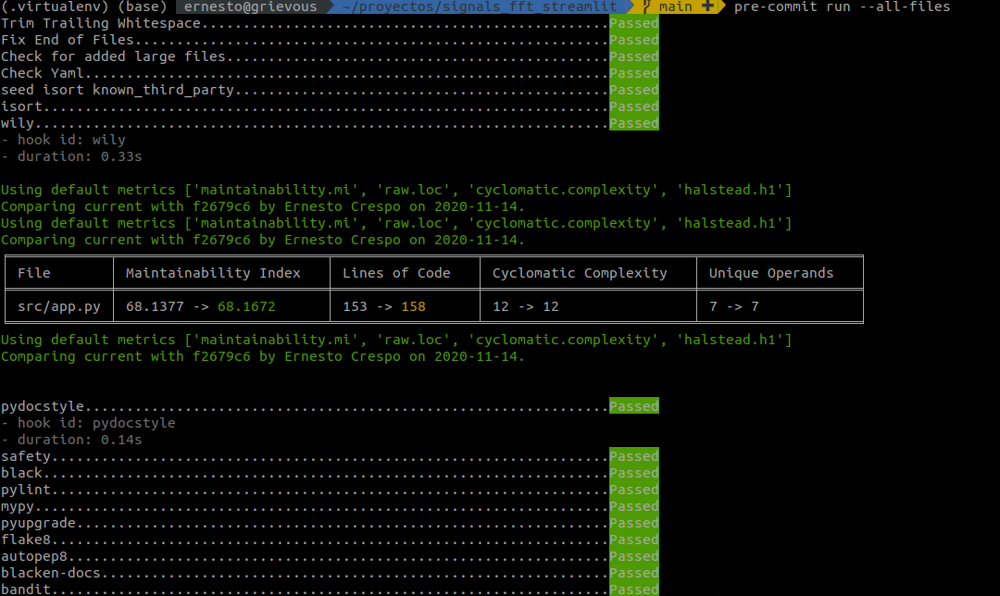

Desarrollar código limpio de Python
Posted on Sun 15 November 2020 in Tutorial de Python • 14 min read
En artículo anterior (Herramientas de Python para desarrollar código seguro y de calidad) se tocó el tema de herramientas que facilitan a cumplir el PEP8 de Python, mejoras de seguridad del código y formateo del mismo, en este caso se usa circle-ci para las evaluaciones.
En este artículo se usará la evaluación antes de subir código a un repositorio de git. El artículo se basa en los siguientes artículos:
- Python Code Quality: Tools & Best Practices
- Python Code Quality
- pre-commit hooks you must know
- Simplify your Python Code: Automating Code Complexity Analysis with Wily
- How to Improve your Python Code Style with Pre-commit Hooks
- Keeping python code clean with pre-commit hooks: black, flake8 and isort
Se volvera a tocar las herramientas que se explicaron en el artículo anterior.
El código que se usará para evaluar es el siguiente (no cumple con las comprobaciones):
import numpy as np
from scipy import signal as sp
import matplotlib.pylab as plt
import scipy.signal as signal
import scipy.stats as stats
import streamlit as st
def u(amplitud, t):
"""Función escalón unitario
Args:
amplitud (int): Amplitud del escalon
t (list): Lista de tiempo
Returns:
list: Lista de valores
"""
return amplitud*np.piecewise(t, [t < 0.0, t >= 0.0], [0, 1])
def OndaCuadrada(amplitud, t, fs=1):
"""Función de Onda Cuadrada
Args:
amplitud (int): Amplitud de la segnal
t (list): Lista de valores de tiempo
fs (int, optional): Frecuencia.. Defaults to 1.
Returns:
list: Lista de valores
"""
return ((sp.square(2 * fs*t)) * (amplitud / 2.0)) + (amplitud / 2.0)
def segnal_triangular(amplitud, simetria, t, fs=1):
"""Señal triangular
Args:
amplitud (int): Amplitud de la señal
simetria (float): simetria de la señal
t (list): Lista de valores que definen el tiempo.
fs (int, optional): Frecuencia de la señal. Defaults to 1.
Returns:
list: Lista de valores de la señal
"""
return amplitud*(signal.sawtooth(2 * np.pi * fs * t, simetria))
def seno(amplitud, t, fs=1):
""" Onda Seno
Args:
amplitud (int): Amplitud de la señal
t (list): Lista de valores de tiempo
fs (int, optional): Frecuencia de la señal. Defaults to 1.
Returns:
list: Lista de valores de la señal de seno
"""
return amplitud*np.sin(fs*t)
def coseno(amplitud, t, fs=1):
"""Señal de coseno
Args:
amplitud (int): Amplitud de la señal
t (list): lista de valores para generar la señal
fs (int, optional): Frecuencia de la señal. Defaults to 1.
Returns:
list: Lista de valores de la señal
"""
return amplitud*np.cos(fs*t)
def tiempo(lim_inf, lim_sup, n):
"""Lista de valores que definen el tiempo de la señal
Args:
lim_inf (int): Límite inferior del tiempo
lim_sup (int): Límite superior del tiempo
n (int): Cantidad de valores a generar del tiempo
Returns:
list: Lista de valores del tiemmpo
"""
return np.linspace(lim_inf, lim_sup, n)
def plot_signal(xi, xf, yi, yf, t, titulo, etiqueta, values):
"""Generación de la gráfica de la señal.
Args:
xi (int): x inicial
xf (int): x final
yi (int): y inicial
yf (int): y final
t (list): lista de valores de tiempo
titulo (str): Título de la gráfica
etiqueta (str): Etiqueta de la señal.
values (list): Valores de la señal
"""
plot(t, values, 'k', label=etiqueta, lw=2)
xlim(xi, xf)
def main():
# Definir título
st.title("Generación de gráficas de señales")
st.sidebar.header("Entradas:")
segnales = ["Escalon Unitario", "Onda Cuadrada",
"Onda triangular", "Seno", "Coseno"]
resp = st.sidebar.selectbox("Tipo de señal", segnales)
st.sidebar.header("Definición del tiempo:")
st.sidebar.subheader("Rango")
# SelectBox
t0 = int(st.sidebar.selectbox(
"", range(0, 10)
))
ti = 0
tf = t0
n = 10000
t = tiempo(ti, tf, n)
st.sidebar.subheader("Amplitud de la señal")
amplitud = int(st.sidebar.selectbox(
"", range(1, 10)
))
# numpy.ndarray
if resp == "Escalon Unitario":
ti = -tf
resultado = u(amplitud, t)
elif resp == "Onda Cuadrada":
st.sidebar.subheader("Frecuencia de la señal")
fs = int(st.sidebar.selectbox(
"", range(1, 11)
))
resultado = OndaCuadrada(amplitud, t, fs)
elif resp == "Onda triangular":
simetria = 0.5
st.sidebar.subheader("Frecuencia de la señal")
fs = int(st.sidebar.selectbox(
"", range(1, 11)
))
resultado = segnal_triangular(amplitud, simetria, t, fs)
elif resp == "Seno":
st.sidebar.subheader("Frecuencia de la señal")
fs = int(st.sidebar.selectbox(
"", range(1, 11)
))
resultado = seno(amplitud, t, fs)
elif resp == "Coseno":
st.sidebar.subheader("Frecuencia de la señal")
fs = int(st.sidebar.selectbox(
"", range(1, 11)
))
resultado = coseno(amplitud, t, fs)
else:
resultado = 0
st.error("Error")
fig = plt.figure()
ax = fig.add_subplot(111)
st.header(f"Gráfica de {resp}")
ax.plot(t, resultado)
ax.set_xlim(ti, tf)
ax.set_xlabel("Tiempo")
ax.set_ylabel("f(t)")
ax.set_ylim(2*amplitud*-1, 2*amplitud)
st.pyplot(fig)
if __name__ == "__main__":
main()
Su archivo de requerimientos es el siguiente:
streamlit==0.70.0
scipy==1.5.4
numpy==1.19.3
matplotlib==3.3.3
Su estructura inicial de archivos es la siguiente (incluyendo archivos ocultos):
signals_fft_streamlit
├── .git
│ ├── branches
│ ├── config
│ ├── description
│ ├── HEAD
│ ├── hooks
│ │ ├── applypatch-msg.sample
│ │ ├── commit-msg.sample
│ │ ├── fsmonitor-watchman.sample
│ │ ├── post-update.sample
│ │ ├── pre-applypatch.sample
│ │ ├── pre-commit.sample
│ │ ├── pre-merge-commit.sample
│ │ ├── prepare-commit-msg.sample
│ │ ├── pre-push.sample
│ │ ├── pre-rebase.sample
│ │ ├── pre-receive.sample
│ │ └── update.sample
│ ├── index
│ ├── info
│ │ └── exclude
│ ├── logs
│ │ ├── HEAD
│ │ └── refs
│ │ ├── heads
│ │ │ └── main
│ │ └── remotes
│ │ └── origin
│ │ └── HEAD
│ ├── objects
│ │ ├── info
│ │ └── pack
│ │ ├── pack-a6d9863d11286fbea66f5aafa93a9dbafaf3f4fc.idx
│ │ └── pack-a6d9863d11286fbea66f5aafa93a9dbafaf3f4fc.pack
│ ├── packed-refs
│ └── refs
│ ├── heads
│ │ └── main
│ ├── remotes
│ │ └── origin
│ │ └── HEAD
│ └── tags
├── .gitignore
├── LICENSE
├── README.md
├── requirements.txt
└── src
└── app.py
Dentro de los hooks se puede definir ejecuciones antes de hacer commit usando pre-commit, que se verá más adelante.
Validación de código
Linters
Los linters son herramientas de programación que realizan la comprobación de cualquier lenguaje de programamción.
Flake8
Herramienta que permite comprobar que el código cumple con el PEP-8 de Python.
Se puede instalar vía pip:
pip install flake8
Se ejecuta flake8 al archivo app.py:
python -m flake8 src/app.py
src/app.py:5:1: F401 'scipy.stats' imported but unused
src/app.py:22:6: N802 function name 'OndaCuadrada' should be lowercase
src/app.py:37:20: W291 trailing whitespace
src/app.py:83:50: W291 trailing whitespace
src/app.py:104:43: W291 trailing whitespace
src/app.py:106:5: F821 undefined name 'plot'
src/app.py:107:5: F821 undefined name 'xlim'
La salida del comando muestra las líneas de código donde hay error, el tipo de error y una descripción del mismo.
pep8-naming
Adicional a flake se puede usar pep8-naming para cumplir con las normas de definición de nombres de PEP8.
Para instalarlo se usa pip:
pip install pep8-naming
Se ejecuta el mismo comando de flake8, el mensaje de error es :
src/app.py:22:6: N802 function name 'OndaCuadrada' should be lowercase
Que ya apareció en la ejecución anterior.
pycodestyle
Es otra herramienta de validación del PEP-8. png
Se instala:
pip install pycodestyle
Se ejecuta:
pycodestyle src/app.py
En este caso como ya se arreglaron los mensajes de error de flake8, no devuelve mensajes.
pylint
Se instala:
pip install pylint
Se ejecuta:
pylint src/app.py
Formateador de código
Permite reformatear el código para que cumpla una serie de estándar.
isort
Reordena los imports de la siguiente forma:
- Librería estándar
- Librerías de terceros
- Librerías local
Se instala:
pip install isort
Se usa de la siguiente forma:
isort src/app.py
Fixing /home/ernesto/proyectos/signals_fft_streamlit/src/app.py
Anteriormente las importaciones estaban así:
import numpy as np
from scipy import signal as sp
import matplotlib.pylab as plt
import scipy.signal as signal
import scipy.stats as stats
import streamlit as st
Ahora:
import matplotlib.pylab as plt
import numpy as np
import scipy.signal as signal
import streamlit as st
from scipy import signal as sp
Para solo chequear el orden de la importación sin realizar el cambio se puede ejecutar:
python -m isort src/app.py --check-only
Para ver los cambios sin aplicarlos se puede usar:
python -m isort src/app.py --diff
Black
Formateador de código que se usa para reformatear código basado en Black code style que es muy cercano al PEP-8.
Para instalarlo:
pip install black
Para chequear el código sin modificarlo:
python -m black src/app.py --check
would reformat src/app.py
Oh no! 💥 💔 💥
1 file would be reformatted.
Para ver las diferencias sin modificarlo (sólo se muestra una parte del código):
--- src/app.py 2020-11-15 01:20:29.525556 +0000
+++ src/app.py 2020-11-15 01:29:54.278851 +0000
@@ -13,11 +13,11 @@
t (list): Lista de tiempo
Returns:
list: Lista de valores
"""
- return amplitud*np.piecewise(t, [t < 0.0, t >= 0.0], [0, 1])
+ return amplitud * np.piecewise(t, [t < 0.0, t >= 0.0], [0, 1])
Para realizar las modificaciones:
python -m black src/app.py
reformatted src/app.py
All done! ✨ 🍰 ✨
1 file reformatted.
El código cambio a (se muestra una parte del código):
def u(amplitud, t):
"""Función escalón unitario
Args:
amplitud (int): Amplitud del escalon
t (list): Lista de tiempo
Returns:
list: Lista de valores
"""
return amplitud * np.piecewise(t, [t < 0.0, t >= 0.0], [0, 1])
Otras herramientas parecidas son YAPF y autopep8
Escaneo de vulnerabilidades de seguridad
Hay herramientas que evaluan las vulnerabilidades de seguridad del código y de sus dependencias.
Bandit
Bandit Es una herramienta diseñada para encontrar problemas de seguridad en código Python.
Se instala:
pip install bandit
Se ejecuta de la siguiente forma:
bandit -r src/app.py
[main] INFO profile include tests: None
[main] INFO profile exclude tests: None
[main] INFO cli include tests: None
[main] INFO cli exclude tests: None
[main] INFO running on Python 3.8.3
Run started:2020-11-15 01:44:06.048642
Test results:
No issues identified.
Code scanned:
Total lines of code: 119
Total lines skipped (#nosec): 0
Run metrics:
Total issues (by severity):
Undefined: 0.0
Low: 0.0
Medium: 0.0
High: 0.0
Total issues (by confidence):
Undefined: 0.0
Low: 0.0
Medium: 0.0
High: 0.0
Files skipped (0):
Por lo que se pueded ver, no tiene problemas de seguridad el código.
Safety
Safety es una herramienta que verifica problemas de seguridad de las dependencias de la aplicación.
Se instala:
pip install safety
Se ejecuta de la siguiente forma:
safety check
+==============================================================================+
| |
| /$$$$$$ /$$ |
| /$$__ $$ | $$ |
| /$$$$$$$ /$$$$$$ | $$ \__//$$$$$$ /$$$$$$ /$$ /$$ |
| /$$_____/ |____ $$| $$$$ /$$__ $$|_ $$_/ | $$ | $$ |
| | $$$$$$ /$$$$$$$| $$_/ | $$$$$$$$ | $$ | $$ | $$ |
| \____ $$ /$$__ $$| $$ | $$_____/ | $$ /$$| $$ | $$ |
| /$$$$$$$/| $$$$$$$| $$ | $$$$$$$ | $$$$/| $$$$$$$ |
| |_______/ \_______/|__/ \_______/ \___/ \____ $$ |
| /$$ | $$ |
| | $$$$$$/ |
| by pyup.io \______/ |
| |
+==============================================================================+
| REPORT |
| checked 136 packages, using default DB |
+==============================================================================+
| No known security vulnerabilities found. |
+==============================================================================+
Para verificar solamente la lista de paquetes que tiene requirements.txt se ejecuta:
safety check -r requirements.txt
+==============================================================================+
| |
| /$$$$$$ /$$ |
| /$$__ $$ | $$ |
| /$$$$$$$ /$$$$$$ | $$ \__//$$$$$$ /$$$$$$ /$$ /$$ |
| /$$_____/ |____ $$| $$$$ /$$__ $$|_ $$_/ | $$ | $$ |
| | $$$$$$ /$$$$$$$| $$_/ | $$$$$$$$ | $$ | $$ | $$ |
| \____ $$ /$$__ $$| $$ | $$_____/ | $$ /$$| $$ | $$ |
| /$$$$$$$/| $$$$$$$| $$ | $$$$$$$ | $$$$/| $$$$$$$ |
| |_______/ \_______/|__/ \_______/ \___/ \____ $$ |
| /$$ | $$ |
| | $$$$$$/ |
| by pyup.io \______/ |
| |
+==============================================================================+
| REPORT |
| checked 4 packages, using default DB |
+==============================================================================+
| No known security vulnerabilities found. |
+==============================================================================+
Verificación de tipado estático
Cómo a partir de Python 3.7 , python soporta a manera de documentación la definición de tipos de la salida de una función y sus argumentos, se tiene ahora herramientas que verifica el tipado estático.
Mypy
Mypy es un verificador de tipo estático opcional para Python que tiene como objetivo combinar los beneficios de la escritura dinámica (o "duck") y la escritura estática.
Se instala:
pip install mypy
Se usa:
mypy src/app.py
src/app.py:1: error: No library stub file for module 'matplotlib.pylab'
src/app.py:1: note: (Stub files are from https://github.com/python/typeshed)
src/app.py:1: error: No library stub file for module 'matplotlib'
src/app.py:2: error: No library stub file for module 'numpy'
src/app.py:3: error: No library stub file for module 'scipy.signal'
src/app.py:3: error: No library stub file for module 'scipy'
src/app.py:4: error: Cannot find module named 'streamlit'
src/app.py:4: note: See https://mypy.readthedocs.io/en/latest/running_mypy.html#missing-imports
Para ignorar estos errores se usa # type: ignore, como se muestra a continuación:
import matplotlib.pylab as plt # type: ignore
import numpy as np # type: ignore
import scipy.signal as signal # type: ignore
import streamlit as st # type: ignore
from scipy import signal # type: ignore
Se vuelve a ejecutar y ya no aparecen esos errores iniciales.
Un ejemplo de tipado estático se muestra a continuación:
def u(amplitud: int, t: np.ndarray) -> np.ndarray:
"""Función escalón unitario
Args:
amplitud (int): Amplitud del escalon
t (np.ndarray): Lista de tiempo
Returns:
np.ndarray: Lista de valores
"""
return amplitud * np.piecewise(t, [t < 0.0, t >= 0.0], [0, 1])
def onda_cuadrada(amplitud: int, t: np.ndarray, fs: int = 1) ->np.ndarray:
"""Función de Onda Cuadrada
Args:
amplitud (int): Amplitud de la segnal
t (list): Lista de valores de tiempo
fs (int, optional): Frecuencia.. Defaults to 1.
Returns:
list: Lista de valores
"""
return ((sp.square(2 * fs * t)) * (amplitud / 2.0)) + (amplitud / 2.0)
Otra forma de ignorar todos los errores es la siguiente:
#!/usr/bin/env python
#-*- coding: utf-8 -*-
# mypy: ignore-errors
Validación de la documentación
pydocstyle
pydocstyleEs una herramienta que permite validar el formato de la documentación.
Se instala:
pip install pydocstyle
Se utiliza:
pydocstyle src/app.py
src/app.py:1 at module level:
D100: Missing docstring in public module
src/app.py:9 in public function `u`:
D400: First line should end with a period (not 'o')
src/app.py:22 in public function `onda_cuadrada`:
D400: First line should end with a period (not 'a')
src/app.py:36 in public function `segnal_triangular`:
D205: 1 blank line required between summary line and description (found 0)
src/app.py:36 in public function `segnal_triangular`:
D400: First line should end with a period (not 'r')
src/app.py:50 in public function `seno`:
D400: First line should end with a period (not 'o')
src/app.py:64 in public function `coseno`:
D400: First line should end with a period (not 'o')
src/app.py:78 in public function `tiempo`:
D205: 1 blank line required between summary line and description (found 0)
src/app.py:78 in public function `tiempo`:
D400: First line should end with a period (not 'l')
src/app.py:90 in public function `main`:
D103: Missing docstring in public function
Complejidad Ciclomática, número de líneas del código
Existen herramientas para validar la complejidad ciclomática, como lo son:
En este caso se probará con wily
Wily
Wily es una aplicación para trazar la complejidad de código Python y aplicaciones.
Se instala:
pip install wily
Se necesita indexar el proyecto ejecutando:
wily build src/
Found 1 revisions from 'git' archiver in '/home/ernesto/proyectos/signals_fft_streamlit'.
Running operators - maintainability,raw,cyclomatic,halstead
Processing |################################| 4/4
Completed building wily history, run `wily report <file>` or `wily index` to see more.
Para generar el reporte de app.py se ejecuta:
wily report src/app.py
Using default metrics ['maintainability.mi', 'raw.loc', 'cyclomatic.complexity', 'halstead.h1']
-----------History for ['maintainability.mi', 'raw.loc', 'cyclomatic.complexity', 'halstead.h1']------------
╒════════════╤════════════════╤════════════╤═════════════════════════╤═════════════════╤═════════════════════════╤═══════════════════╕
│ Revision │ Author │ Date │ Maintainability Index │ Lines of Code │ Cyclomatic Complexity │ Unique Operands │
╞════════════╪════════════════╪════════════╪═════════════════════════╪═════════════════╪═════════════════════════╪═══════════════════╡
│ f2679c6 │ Ernesto Crespo │ 2020-11-14 │ 68.1377 (0) │ 153 (0) │ 12 (0) │ 7 (0) │
╘════════════╧════════════════╧════════════╧═════════════════════════╧═════════════════╧═════════════════════════╧═══════════════════╛
En el reporte se puede pasar metricas específicas:
wily report src/app.py loc sloc comments --message
-----------History for ('loc', 'sloc', 'comments')------------
╒════════════╤════════════════╤════════════════╤════════════╤═════════════════╤═══════════════════╤═══════════════════════╕
│ Revision │ Message │ Author │ Date │ Lines of Code │ S Lines of Code │ Multi-line comments │
╞════════════╪════════════════╪════════════════╪════════════╪═════════════════╪═══════════════════╪═══════════════════════╡
│ f2679c6 │ Initial commit │ Ernesto Crespo │ 2020-11-14 │ 153 (0) │ 71 (0) │ 8 (0) │
╘════════════╧════════════════╧════════════════╧════════════╧═════════════════╧═══════════════════╧═══════════════════════╛
Complejidad Ciclomática
Según publicación de The Software Engineering Institute at Carnegie Mellon defines donde define los rangos de complejidad: 1-10: Bajo riesgo, programa simple. 11-20: Riesgo moderado, programa más complejo. 21-50: Riesgo alto, programa muy dificil. >50: Riesgo muy alto, programa inestable.
Indice de mantenibilidad
Para este caso: <65: Fuertemente mantenible. 65-85: Moderadamente mantenible. * >85: Fácil de mantener.
En el caso de app.py tiene un riesgo moderado y es moderadamente mantenible.
Para más información sobre la complejidad ciclomática pueden revisar Simplify your Python Code: Automating Code Complexity Analysis with Wily o el pdf de The Software Engineering Institute at Carnegie Mellon defines.
Juntando todo con pre-commit
pre-commit
Pre-commit es un framework para manejar git hooks.
Para instalarlo:
pip install pre-commit
Para inicializar pre-commit se ejecuta:
$pre-commit install
pre-commit installed at .git/hooks/pre-commit
Verificación de Yaml
Para formatear yaml se puede usar la siguiente configuración:
- repo: https://github.com/pre-commit/pre-commit-hooks
rev: v2.4.0
hooks:
- id: trailing-whitespace
- id: end-of-file-fixer
- id: check-added-large-files
- id: check-yaml
exclude: (template|ci).*\.(json|yml|yaml)$
isort
Para validar con isort se tiene lo siguiente:
- repo: https://github.com/asottile/seed-isort-config
rev: v1.9.3
hooks:
- id: seed-isort-config
- repo: https://github.com/pre-commit/mirrors-isort
rev: v4.3.21
hooks:
- id: isort
Para Wily
- repo: local
hooks:
- id: wily
name: wily
entry: wily diff
verbose: true
language: python
additional_dependencies: [wily]
Safety
- repo: git://github.com/Lucas-C/pre-commit-hooks-safety
rev: v1.1.3
hooks:
- id: python-safety-dependencies-check
Black
- repo: https://github.com/ambv/black
rev: stable
hooks:
- id: black
language_version: python3.8
Pylint
- repo: https://github.com/PyCQA/pylint
rev: "pylint-2.6.0"
hooks:
- id: pylint
args: ["--disable=similarities"]
Mypy
- repo: https://github.com/pre-commit/mirrors-mypy
rev: v0.790
hooks:
- id: mypy
exclude: ^testing/resources/
Pyupgrade
- repo: https://github.com/asottile/pyupgrade
rev: v2.7.3
hooks:
- id: pyupgrade
args: [--py36-plus]
Flake8
- repo: https://gitlab.com/pycqa/flake8
rev: 3.8.4
hooks:
- id: flake8
additional_dependencies: [flake8-typing-imports==1.10.0]
Autopep8
- repo: https://github.com/pre-commit/mirrors-autopep8
rev: v1.5.4
hooks:
- id: autopep8
Blacken
- repo: https://github.com/asottile/blacken-docs
rev: v1.8.0
hooks:
- id: blacken-docs
additional_dependencies: [black==20.8b1]
Bandit
- repo: git://github.com/Lucas-C/pre-commit-hooks-bandit
rev: v1.0.4
hooks:
- id: python-bandit-vulnerability-check
exclude: /home/ernesto/proyectos/magnetic_fields/.virtualenvs/*
pydoctstyle
- repo: local
hooks:
- id: pydocstyle
name: pydocstyle
entry: pydocstyle
files: src/app.py
verbose: true
language: python
additional_dependencies: [pydocstyle]
Archivo completo
El archivo completo de .pre-commit-config.yaml contiene los siguiente:
# See https://pre-commit.com for more information
# See https://pre-commit.com/hooks.html for more hooks
repos:
- repo: https://github.com/pre-commit/pre-commit-hooks
rev: v2.4.0
hooks:
- id: trailing-whitespace
- id: end-of-file-fixer
- id: check-added-large-files
- id: check-yaml
exclude: (template|ci).*\.(json|yml|yaml)$
- repo: https://github.com/asottile/seed-isort-config
rev: v1.9.3
hooks:
- id: seed-isort-config
- repo: https://github.com/pre-commit/mirrors-isort
rev: v4.3.21
hooks:
- id: isort
- repo: local
hooks:
- id: wily
name: wily
entry: wily diff
verbose: true
language: python
additional_dependencies: [wily]
- repo: local
hooks:
- id: pydocstyle
name: pydocstyle
entry: pydocstyle
files: src/app.py
verbose: true
language: python
additional_dependencies: [pydocstyle]
- repo: git://github.com/Lucas-C/pre-commit-hooks-safety
rev: v1.1.3
hooks:
- id: python-safety-dependencies-check
- repo: https://github.com/ambv/black
rev: stable
hooks:
- id: black
language_version: python3.8
- repo: https://github.com/PyCQA/pylint
rev: "pylint-2.6.0"
hooks:
- id: pylint
args: ["--disable=similarities"]
- repo: https://github.com/pre-commit/mirrors-mypy
rev: v0.790
hooks:
- id: mypy
exclude: ^testing/resources/
- repo: https://github.com/asottile/pyupgrade
rev: v2.7.3
hooks:
- id: pyupgrade
args: [--py36-plus]
- repo: https://gitlab.com/pycqa/flake8
rev: 3.8.4
hooks:
- id: flake8
additional_dependencies: [flake8-typing-imports==1.10.0]
- repo: https://github.com/pre-commit/mirrors-autopep8
rev: v1.5.4
hooks:
- id: autopep8
- repo: https://github.com/asottile/blacken-docs
rev: v1.8.0
hooks:
- id: blacken-docs
additional_dependencies: [black==20.8b1]
- repo: git://github.com/Lucas-C/pre-commit-hooks-bandit
rev: v1.0.4
hooks:
- id: python-bandit-vulnerability-check
exclude: /home/ernesto/proyectos/magnetic_fields/.virtualenvs/*
Se puede ejecutar el siguiente comando para la verificación:
pre-commit run --all-files
Este devuelve los mensajes como se muestra en la siguiente imagen: 
Desde ahora que se quiere hacer un commit pre-commit evaluará los hooks y se tiene que corregir los errores hasta no tener ninguno, y es allí que se realizará el commit.
Estructura de archivos final.
ignals_fft_streamlit
├── .bandit
├── .git
│ ├── branches
│ ├── COMMIT_EDITMSG
│ ├── config
│ ├── description
│ ├── HEAD
│ ├── hooks
│ │ ├── applypatch-msg.sample
│ │ ├── commit-msg.sample
│ │ ├── fsmonitor-watchman.sample
│ │ ├── post-update.sample
│ │ ├── pre-applypatch.sample
│ │ ├── pre-commit
│ │ ├── pre-commit.sample
│ │ ├── pre-merge-commit.sample
│ │ ├── prepare-commit-msg.sample
│ │ ├── pre-push.sample
│ │ ├── pre-rebase.sample
│ │ ├── pre-receive.sample
│ │ └── update.sample
│ ├── index
│ ├── info
│ │ └── exclude
│ ├── logs
│ │ ├── HEAD
│ │ └── refs
│ │ ├── heads
│ │ │ ├── feat
│ │ │ │ └── validado
│ │ │ └── main
│ │ └── remotes
│ │ └── origin
│ │ └── HEAD
│ ├── ORIG_HEAD
│ ├── packed-refs
│ └── refs
│ ├── heads
│ │ ├── feat
│ │ │ └── validado
│ │ └── main
│ ├── remotes
│ │ └── origin
│ │ └── HEAD
│ └── tags
├── .gitignore
├── .isort.cfg
├── LICENSE
├── .pre-commit-config.yaml
├── .pylintrc
├── README.md
├── requirements.txt
└── src
└── app.py
El archivo final de app.py quedó de la siguiente manera:
"""WebApp with streamlit graph signals."""
import matplotlib.pylab as plt # type: ignore
import numpy as np # type: ignore
import streamlit as st # type: ignore
from scipy import signal # type: ignore # pylint: disable=import-error
def u(amplitud: int, t: np.ndarray) -> np.ndarray:
"""Función escalón unitario.
Args:
amplitud(int): Amplitud del escalon
t(np.ndarray): Lista de tiempo
Returns:
np.ndarray: Lista de valores
"""
return amplitud * np.piecewise(t, [t < 0.0, t >= 0.0], [0, 1])
def onda_cuadrada(amplitud: int, t: np.ndarray, fs: int = 1) -> np.ndarray:
"""Función de Onda Cuadrada.
Args:
amplitud(int): Amplitud de la segnal
t(list): Lista de valores de tiempo
fs(int, optional): Frecuencia.. Defaults to 1.
Returns:
list: Lista de valores
"""
return ((signal.square(2 * fs * t)) * (amplitud / 2.0)) + (amplitud / 2.0)
def segnal_triangular(
amplitud: int, simetria: float, t: np.ndarray, fs: int = 1
) -> np.ndarray:
"""Señal triangular.
Args:
amplitud(int): Amplitud de la señal
simetria(float): simetria de la señal
t(np.ndarray): Lista de valores que definen el tiempo.
fs(int, optional): Frecuencia de la señal. Defaults to 1.
Returns:
np.ndarray: Lista de valores de la señal
"""
return amplitud * (signal.sawtooth(2 * np.pi * fs * t, simetria))
def seno(amplitud: int, t: np.ndarray, fs: int = 1) -> np.ndarray:
"""Onda Seno.
Args:
amplitud(int): Amplitud de la señal
t (np.ndarray): Lista de valores de tiempo
fs (int, optional): Frecuencia de la señal. Defaults to 1.
Returns:
np.ndarray: Lista de valores de la señal de seno
"""
return amplitud * np.sin(fs * t)
def coseno(amplitud: int, t: np.ndarray, fs: int = 1) -> np.ndarray:
"""Señal de coseno.
Args:
amplitud (int): Amplitud de la señal
t (np.ndarray): lista de valores para generar la señal
fs (int, optional): Frecuencia de la señal. Defaults to 1.
Returns:
np.ndarray: Lista de valores de la señal
"""
return amplitud * np.cos(fs * t)
def tiempo(lim_inf: int, lim_sup: int, n: int) -> np.ndarray:
"""Lista de valores que definen el tiempo de la señal.
Args:
lim_inf (int): Límite inferior del tiempo
lim_sup (int): Límite superior del tiempo
n (int): Cantidad de valores a generar del tiempo
Returns:
np.ndarray: Lista de valores del tiemmpo
"""
return np.linspace(lim_inf, lim_sup, n)
def main():
"""Ejecución Streamlit webApp."""
st.title( # pylint: disable=no-value-for-parameter
"Generación de gráficas de señales"
) # pylint: disable=no-value-for-parameter
st.sidebar.header("Entradas:") # pylint: disable=no-value-for-parameter
segnales = [
"Escalon Unitario",
"Onda Cuadrada",
"Onda triangular",
"Seno",
"Coseno",
]
resp = st.sidebar.selectbox("Tipo de señal", segnales)
st.sidebar.header("Definición del tiempo:")
st.sidebar.subheader("Rango")
# SelectBox
t0 = int(st.sidebar.selectbox("", range(0, 10)))
ti = 0
tf = t0
n = 10000
t = tiempo(ti, tf, n)
st.sidebar.subheader("Amplitud de la señal")
amplitud = int(st.sidebar.selectbox("", range(1, 10)))
# numpy.ndarray
if resp == "Escalon Unitario":
ti = -tf
resultado = u(amplitud, t)
elif resp == "Onda Cuadrada":
st.sidebar.subheader("Frecuencia de la señal")
fs = int(st.sidebar.selectbox("", range(1, 11)))
resultado = onda_cuadrada(amplitud, t, fs)
elif resp == "Onda triangular":
simetria = 0.5
st.sidebar.subheader("Frecuencia de la señal")
fs = int(st.sidebar.selectbox("", range(1, 11)))
resultado = segnal_triangular(amplitud, simetria, t, fs)
elif resp == "Seno":
st.sidebar.subheader("Frecuencia de la señal")
fs = int(st.sidebar.selectbox("", range(1, 11)))
resultado = seno(amplitud, t, fs)
elif resp == "Coseno":
st.sidebar.subheader("Frecuencia de la señal")
fs = int(st.sidebar.selectbox("", range(1, 11)))
resultado = coseno(amplitud, t, fs)
else:
resultado = 0
st.error("Error")
fig = plt.figure()
ax = fig.add_subplot(111)
st.header(f"Gráfica de {resp}")
ax.plot(t, resultado)
ax.set_xlim(ti, tf)
ax.set_xlabel("Tiempo")
ax.set_ylabel("f(t)")
ax.set_ylim(2 * amplitud * -1, 2 * amplitud)
st.pyplot(fig)
if __name__ == "__main__":
main()
El respositorio donde pueden ver los archivos se encuentra en github
¡Haz tu donativo! Si te gustó el artículo puedes realizar un donativo con Bitcoin (BTC) usando la billetera digital de tu preferencia a la siguiente dirección: 17MtNybhdkA9GV3UNS6BTwPcuhjXoPrSzV
O Escaneando el código QR desde la billetera:

Python pydocstyle bandit Black pylint pre-commit pyupgrade flake8 pep8-naming pycodestyle isort mypy wily streamlit